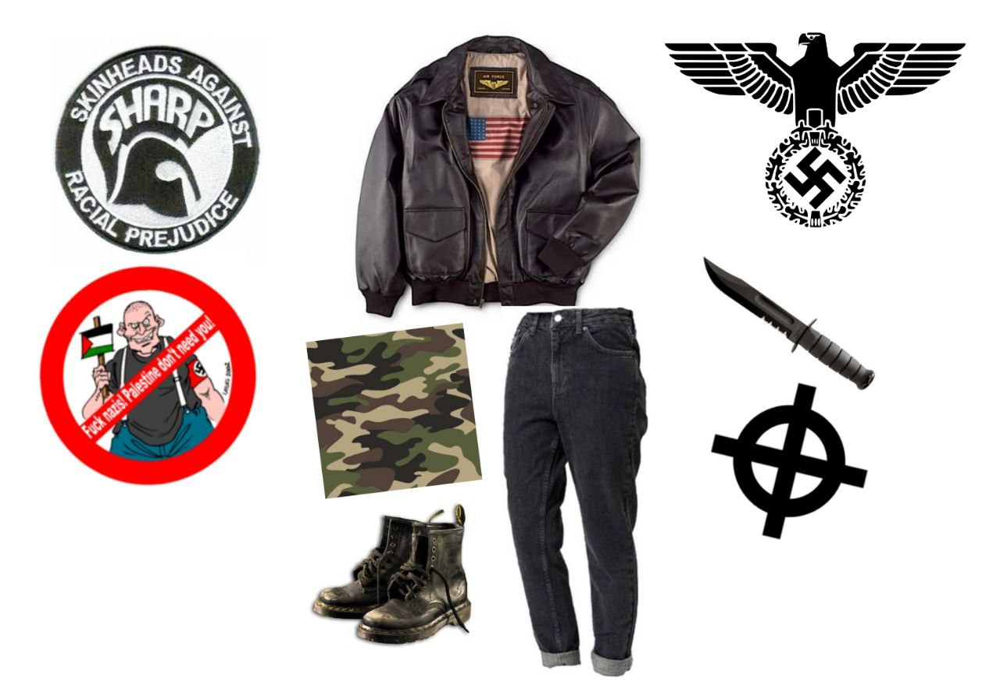

Скинхеды (англ. skinheads, от skin — кожа и head — голова)

Радикальное ответвление стиля мод-культуры и дерзости ямайских рудбоев (англ. "грубый парень") получившее развитие в начале 70х в Британии, хотя сами скинхеды считают своим пиковым годом 1969 (лозунг «Remember the Spirit of 69»). Изначально скинхеды были аполитичный, антибуржуазно настроены, слушали регги и ска (сейчас такое представить сложно, так как это крайне миролюбивые жанры) и среди них было даже много темнокожих. Однако те скинхеды, которых мы знаем как отпетых ультраправых националистов - это НС-скинхеды, с разговорным термином Бонхеды (бонЫ), которые наоборот стали очень политизированными. Появились они вследствии роста социально-националистического напряжения из-за миграции дешевой рабочей силы из стран Ближнего Востока. В противовес бонхедами выступили S.H.A.R.P (англ. Skinheads Against Racial Prejudices) — «Скинхеды против расовых предрассудков». Они же старались наоборот защитить имидж стильной и интеллектуальной субкультуры скинхедов в глазах общества. В наше время группировки бонхедов малочисленны и не представляют сильной угрозы. На картинке слева символика S.H.A.R.P скинхедов, справа - бонхедов.
Полная история скинхедов